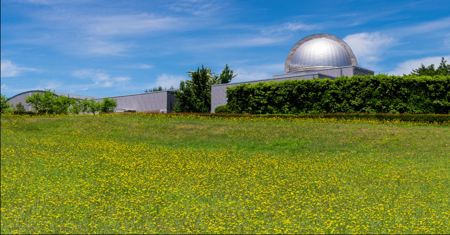

アクセス
アクセスマップ
電車・バスでお越しの方
＜多治見駅経由＞
多治見駅
土岐プラネタリウム
＜土岐駅経由＞
土岐駅
土岐プラネタリウム
お車でお越しの方
周辺ICからの所要時間
- 東海環状線自動車道 土岐南多治見IC 内回り 入口
- 6分
- 東海環状線自動車道 土岐南多治見IC 外回り 入口
- 7分
- 東海環状線自動車道 土岐南多治見IC 内回り 出口
- 8分
- 東海環状線自動車道 土岐南多治見IC 外回り 出口
- 8分
- 東海環状線自動車道 五斗蒔スマートIC 外回り 出口
- 15分
※駐車場は30台ございます。駐車料金はかかりません。